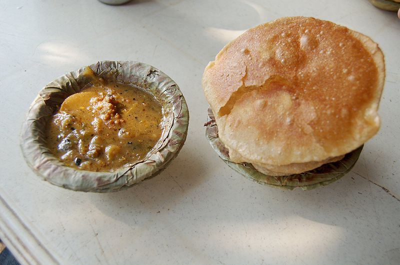
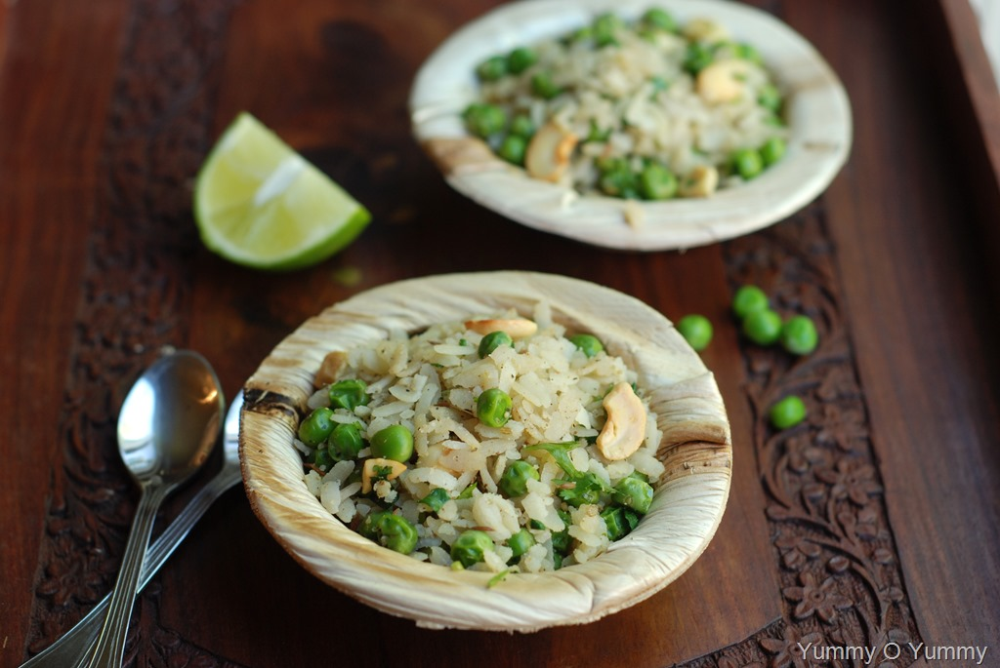
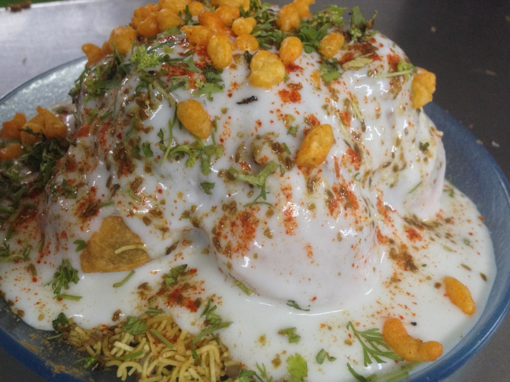
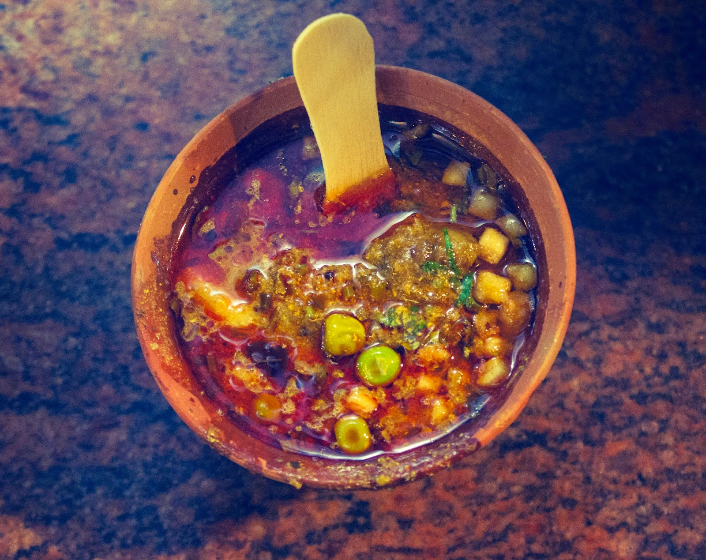
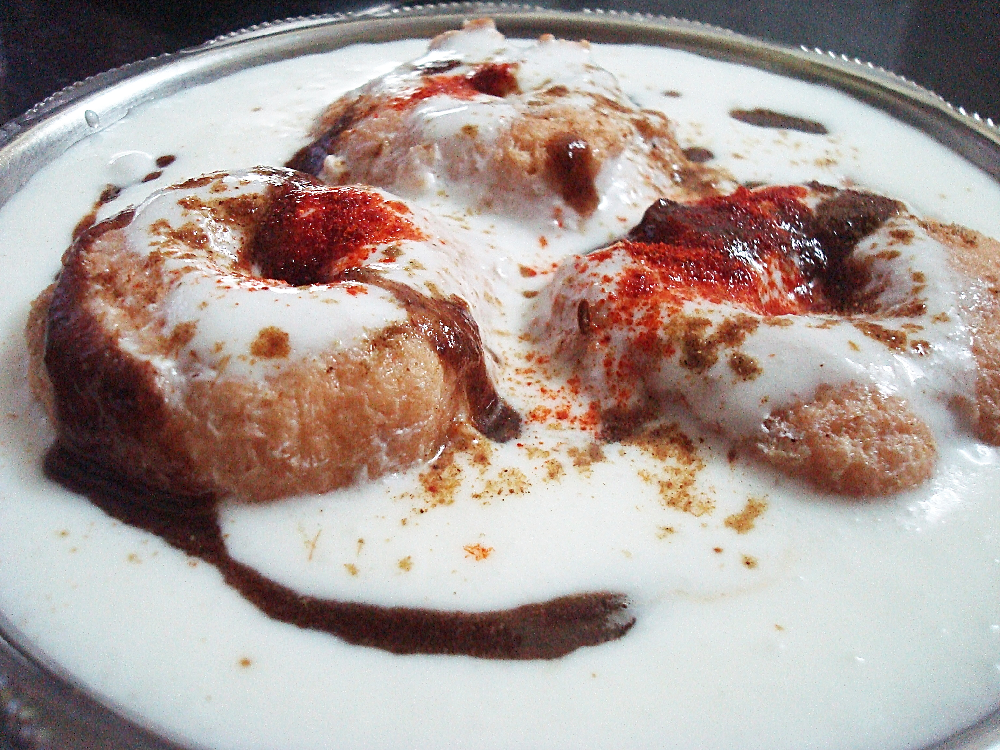
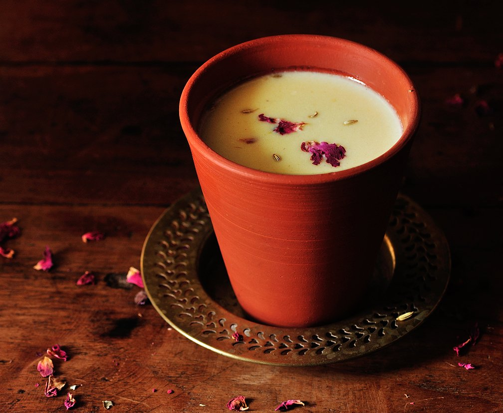
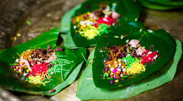
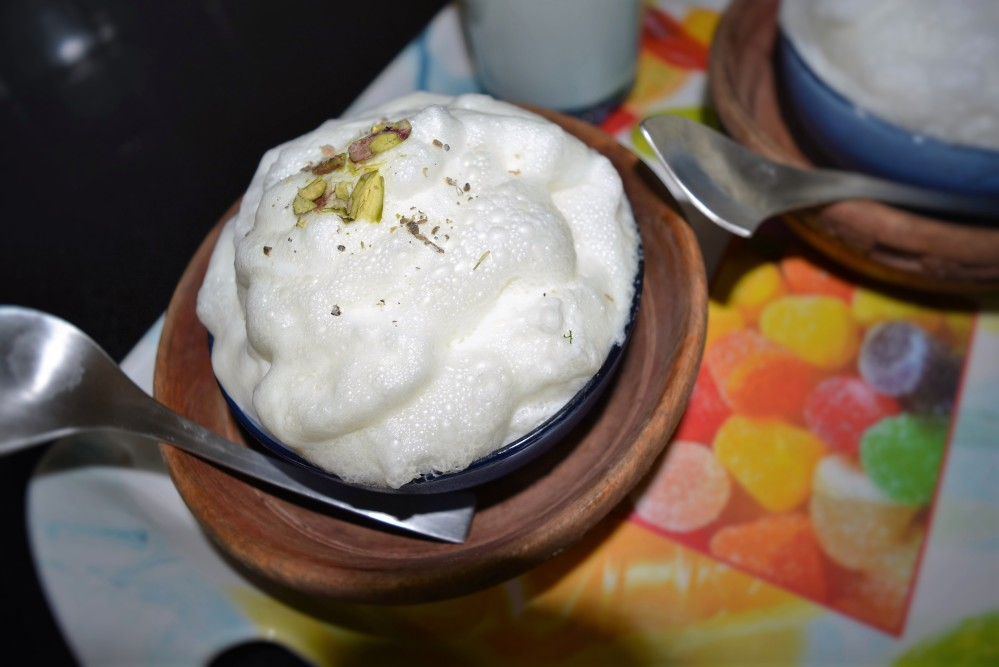
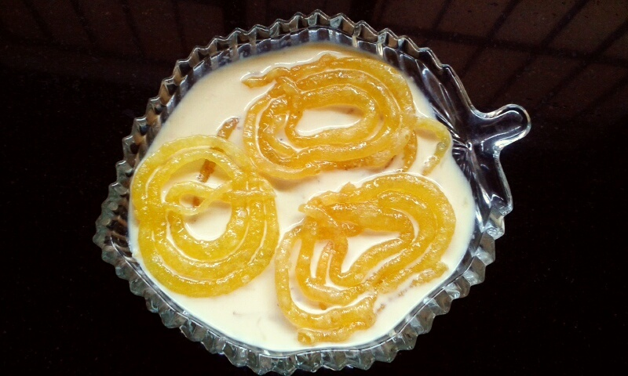

The Travel Blog
The Travel Blog
Street food in Varanasi is as elaborate as the city's history. And Varanasi is as old as time itself. Since Aryan culture is found in the holy city, meat and beef is not that common and vegetarian cuisine is mostly followed with some exceptions due to Muslim habitations. The food of Varanasi is influenced by nearby states including Bihar and West Bengal, which has been given a different flavour by the locals of the city. Unless one savours the culinary treats of Banaras, a trip is incomplete. Food is a quintessential part of the Varanasi's culture. Being frequented by hundreds of thousands of foreign tourists throughout the year, the city's cuisine is a spin-off between the new and the old, the modern and the old-fashioned. A few handpicked locations and special treats will tickle your taste buds while you're in Varanasi. Here are some popular places for Varanasi street food that you must try if you ever visit the city:
Kachori Sabzi is the most popular breakfast dish in Varanasi. There are two different types of Kachoris- Badi and Choti Kachori. While Badi Kachori is stuffed with a spicy mixture made of lentils called Dal Ki Pithi, Choti Kachori is stuffed with a spicy mashed potato mix. The flavorful Kachoris are served with a tangy and aromatic Aloo curry, which is made using a generous amount of cloves and black pepper. Green chillies and dry red chillies have added the curry to make it hot and spicy.
This street food is a Varanasi version of Maharashtrian Poha and Poha Chiwda of Bihar. Made of flattened rice soaked in desi ghee and cooked with spices along with green peas, raisins and saffron, Choora Matar is a famous breakfast and evening time snack in Varanasi. Spices like black pepper, garam masala and hing are added to this dish to enhance its flavour. No onions are added to the mixture which sets it apart from its Marathi and Bihari counterparts. Milk or cream is also added to the mix here to enhance its texture and flavour.
Also popularly known as Meethe Golgappe, Dahi Chutney Gol Gappe is a sweet and spicy delight which are loved by children and adults alike. Wafer-thin, crisp Gol Gappas are filled with a spicy mixture of boiled potatoes and then topped with tangy chutneys, curd flavoured with Imli, Pudina and other spices along with sev. Pomegranate is also sprinkled as a final garnishment at some joints. Crispy and wholesome, these little packets burst different flavours as soon as you put them in your mouth.
Baati Chokha, a favourite delicacy in Bihar makes for a tasty street snack in Varanasi too. Stuffed whole wheat dough balls are stuffed with roasted chana dal and spices inside. These stuffed balls are known as Litties and are roasted over charcoal. Litties are dipped generously in desi ghee and served with Chokha, which is made of a spicy mixture of boiled potatoes, tomato and eggplant.

Tamatar Chaat is a local version of aloo chaat and is made from a mashed mixture of boiled potatoes, tomatoes, onions, green chillies and fresh coriander leaves. This mouthwatering spicy chaat is too hot to handle and is not for the faint-hearted. Spices like pounded ginger, red chilli powder and garam masala are splashed into the dish making it deliciously fiery. It is served in a dona, a bowl made with palash leaves.

Chena Dahi Vada is a sumptuous variation to the regular bhallas prepared using lentil. Similar to Rasmalai in appearance, Chena Dahi Vada is usually served with sweet yoghurt sprinkled with a dash of Masala made of jeera and black salt. These dahi vadas are served with a steaming cup of tea and are quite popular as a breakfast item in Varanasi. The snack offers a perfect mix of sweet and sour flavours.
Varanasi fairs high on the production of milk and curd and thus a profound use of these items can be found in most of the city's preparations. Banarasi Thandai is famous across India for its refreshing taste and celebratory spirit. Made from seasonal fruit puree, Thandai is served in a kulhad topped with Rabri and flavoured with rose essence, ice- cream, dry fruits and nuts. Condiments like fennel seeds, magaztari seeds, pepper, vetiver seeds, cardamom and saffron make the flavours truly rich and refreshing. People add some quantity of Bhang in Thandai on festive occasions like Holi. Thandai in Banaras is available with the kick of bhang if you're up to try it. Bhang is a mix of dried leaves and buds of the female cannabis plant that is consumed lovingly in 'Bhole Baba ki Nagri'! Baba Thandai and Thandai Ghar are two places to root for, at Godowlia Chowk. These are the places to visit in Varanasi if you're craving for some fantastic thandai.
Banarasiya Paan is something that you must try when in Varanasi. Paan is made from beetle nut leaves with beetle nuts or Supari, lime and a mixture of condiments and eaten with tobacco or lime. There is also the Meetha Paan, a version of Paan, devoid of tobacco or lime but filled with sweetened rose petals, fennel seeds and soft and chewy Supari.
Makhan Malaiyyo or Nimish is a popular winter season street dessert in Varanasi. Influenced by Persian cuisine, Malaiyyo is prepared by churning the milk slowly to create a creamy texture. The milk foam is then flavoured with saffron and cardamoms and garnished with pistachios and almonds on the top. Extraordinarily light and perfectly sweet, it is served in Purva or kulhads. Malayiyyo is a well-kept secret of Varanasi, which one can only experience while visiting this eternal city.
Banaras is the king of Jalebis. The jalebis or imartis (a bigger cousin of the Jalebi) are a sweet treat too excellent to miss. Try them with rabri and you'll want to come back to Banaras for this one!
IT'S NEVER ENOUGH TO KNOW THE FOOD IN VARNASI THAT FASCINATES ALL BECAUSE EACH
SHOP,EACH GALI,HAS IT'S OWN STORY AND TASTE...
DO FOLLOW US ON DIFFERENT SOCIAL PLATFORMS TO STAY
CONNECTED..